LỜI NÓI ĐẦU
Kính chào các quý độc giả!
Lịch sử chính là nguồn cội, là dòng
chảy thiêng liêng không ngừng trôi đi qua năm tháng.
Nhưng khi mà thời gian càng ngày càng trôi xa, nhưng năm tháng huy hoàng xưa ấy dần mai một. Đặc biệt là khi thời thế đang dần thế thời, cái hiện đại lấn át cái xưa kia. Ngày nay, các bạn trẻ chỉ biết chạy đua với thời đại, chỉ chăm chăm bắt kịp xu hướng nhất thời trước mắt mà quên đi những giá trị sâu sắc phía sau.
Khi được sinh ra trong hòa bình, ta lại càng quên đi xưa kia nhưng năm tháng máu chảy thành sông như thế nào. Những người đã ngã xuống, những trái tim quả cảm đứng lên chiến đấu cho hòa bình Tổ Quốc.
Chính vì nhận ra những điều ấy, chúng tôi đã tạo nên cách thức giúp cho được phần thế hệ trẻ cảm thấy hứng thú hơn về lịch sử bằng cách kết hợp những giá trị hiện đại và giá trị truyền thống để đúc kết lên Dòng Chảy Lịch Sử
Chúng tôi đã sưu tầm được một số những danh tướng tiêu biểu trong lịch sử Việt Nam thời kỳ phong kiến và dùng những ngôn ngữ gần gũi hiện đại nhất để kể lại, chúng tôi có sử dụng một số hình ảnh do AI nhằm tái hiện lịch sử dễ hình dung, nếu có điều gì sai sót, xin hãy phản hồi, chúng tôi rất ghi nhận những đóng góp của quý độc giả!
Chúng tôi xin trân trọng cảm ơn!
898 - 944
Ngô Quyền
924 - 979
Đinh Bộ Lĩnh
1232 - 1300
Trần Hưng Đạo
1753 - 1792
Nguyễn Huệ

Ngô Quyền

Đinh Bộ Lĩnh

Trần Hưng Đạo

Nguyễn Huệ
Mỗi vị tướng là một chương sử
Mỗi chiến thắng là cái giá của máu, ý chí và lòng yêu nước
Mỗi trận chiến là sự hy sinh của hàng vạn con người chỉ đổi lấy hai chữ "Tự Do"
Hãy bước vào những trang sử hào hùng của dân tộc Việt Nam
Ngô Quyền
898 - 944
Giới thiệu
Nhắc đến Ngô Quyền là chúng ta nhớ đến ngay đến bãi cọc Bạch Đằng siêu to khổng lồ đâm thủng chiến thuyền quân Nam Hán, nhưng 10 người thì 9 người không biết nhiều về cuộc đời ông. Vậy nên chúng tôi ở đây để giúp bạn khắc phục điều đó!
Ngô Quyền sinh ra trong một gia đình có thế lực ở Đường Lâm.
Tương truyền, khi ông sinh ra, có ánh sáng lạ tỏa khắp nhà, tướng mạo khác thường, có ba nốt ruồi ở lưng. Thầy tướng cho là lạ, bảo có thể làm chủ một phương, nên đã đặt tên là Quyền. Khi lớn lên, Ngô Quyền có vẻ người khôi ngô, mắt sáng như chớp, dáng đi thong thả như hổ, có trí dũng và sức mạnh có thể nâng được vạc bằng đồng.
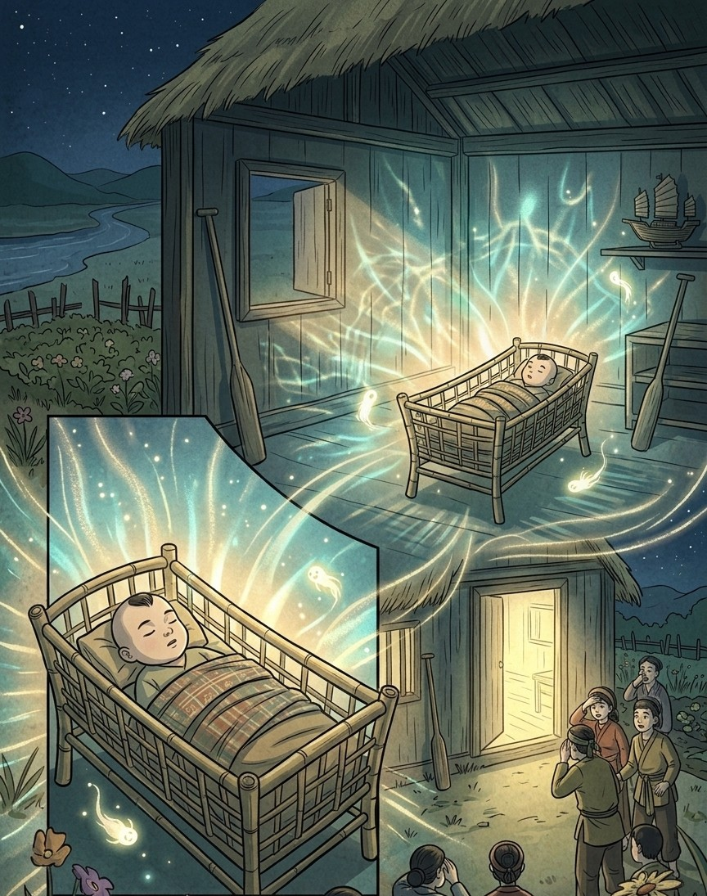
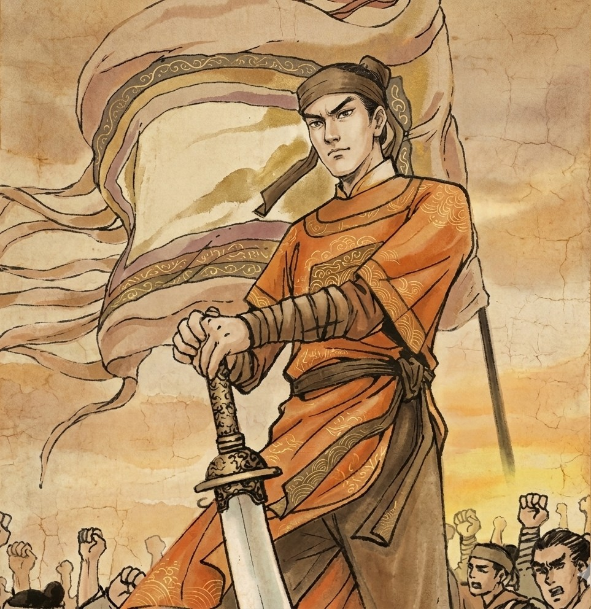
Trưởng thành dưới quyền Dương Đình Nghệ, ông nhanh chóng trở thành vị tướng tài năng, được tin cậy giao nhiều trọng trách
CHIẾN CÔNG
Năm 937, Kiều Công Tiễn giở mưu hèn kế bẩn giết chết cha nuôi (Dương Đình Nghệ) để cướp ngôi Tiết độ sứ.
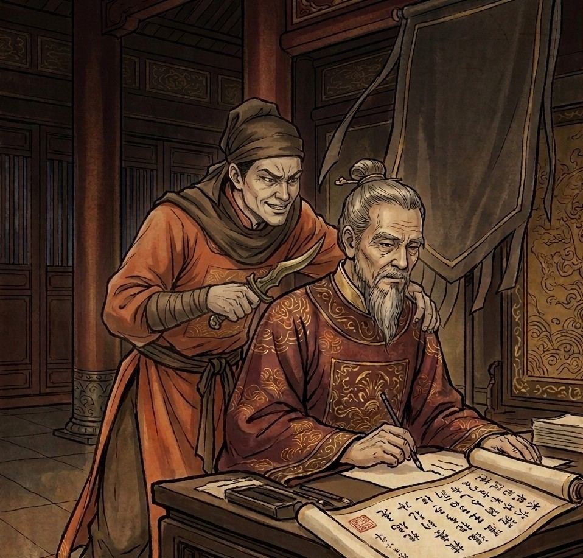
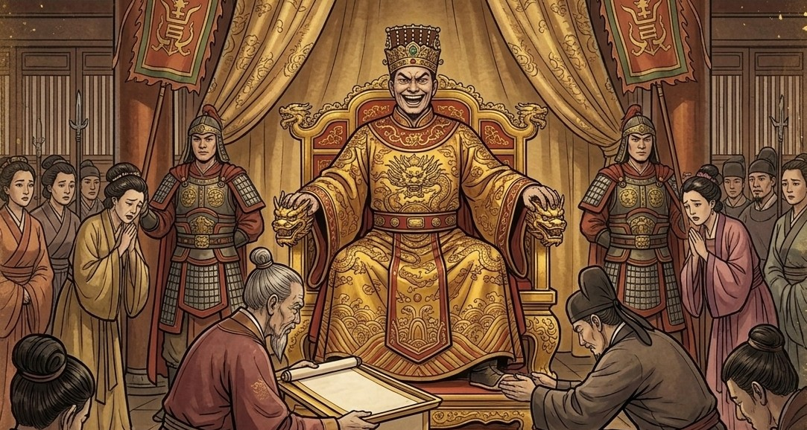
Ngô Quyền khi ấy đang đóng quân ở vùng Ái Châu, nghe tin bố vợ bị thằng con nuôi cho đăng xuất khỏi thế giới. Không dài dòng, ông lập tức triệu tập anh em huynh đệ đi hành quân kéo sang hỏi tội Kiều Công Tiễn
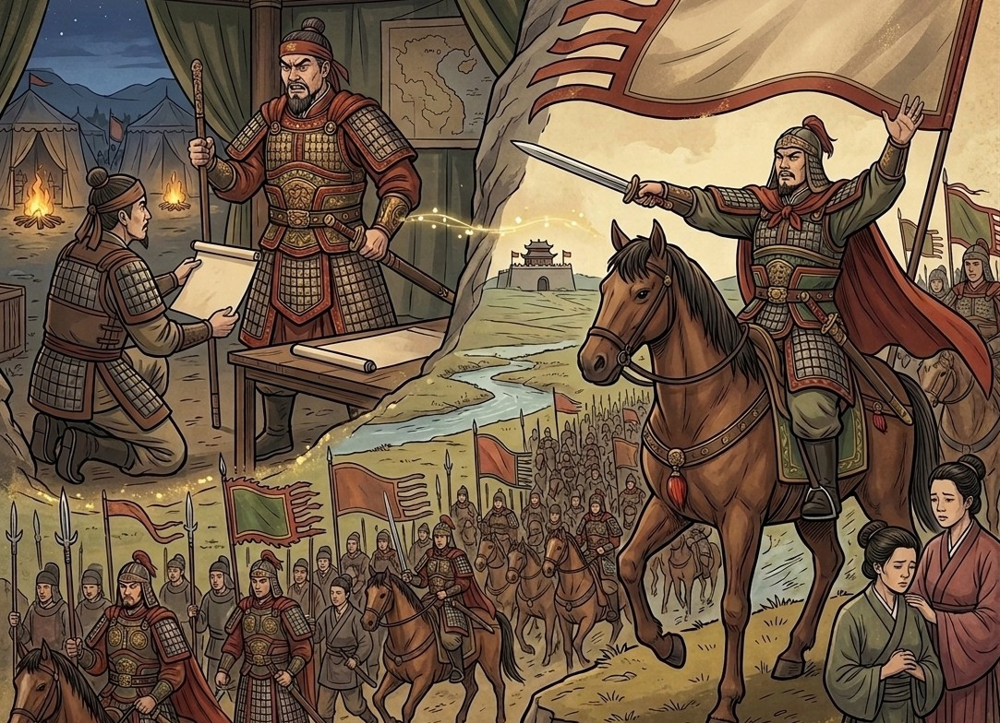
Ngồi chưa kịp ấm chỗ thì nghe tin Ngô Quyền kéo đội quân sát thủ đến hỏi tội. Biết đối mặt trực diện chỉ có nước đi bụi. Trong lúc hoảng loạn tột độ, thanh niên họ Kiều nghĩ ra nước đi hèn hạ nhất hệ mặt trời, một quyết định tự hủy tự bóp mình và cả giang sơn đó là sai tay chân của mình mang châu báu lén lút qua phương Bắc cầu cứu Nam Hán.
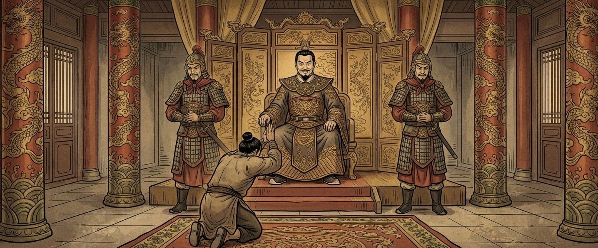
Danh hiệu "đại sứ" rước voi về giày mạ tổ chính thức được trao cho Kiều Công Tiễn
Về phía quân Nam Hán, ông vua Lưu Cung đang ngồi ngáp ruồi nghe tin có kẻ bên Giao Châu dâng cỗ đến tận miệng, gật đầu đồng ý vội. Lưu Cung vừa muốn đánh bóng tên tuổi của mình vừa có cớ sang đánh lấy đất đai màu mỡ bên Giao Châu, khôi phục lại ách đô hộ cai trị đã mất, hắn phong con trai cưng của mình là Lưu Hoàng Tháo làm Giao Vương mang theo đạo quân khổng lồ toàn chiến thuyền vượt sóng tiến thẳng về cửa sông Bạch Đằng.
Nghe tin quân Nam Hán sắp sang chơi, Ngô Quyền kiểu: từ từ đợi dọn rác trong nhà đã rồi hẵng sang chơi. Thế là ông kéo quân đến thành Đại La, Kiều Công Tiễn chưa kịp ảo tưởng cảnh lên làm vua thì bị Ngô Quyền gõ bo bo cho vào đầu, tiễn thẳng xuống tâm sự với cha nuôi.
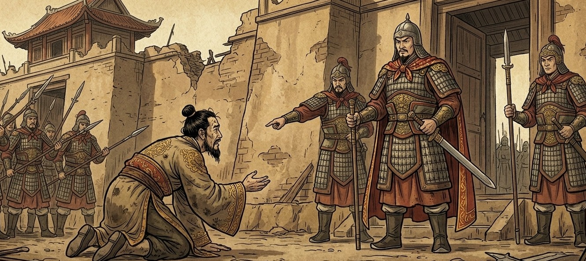
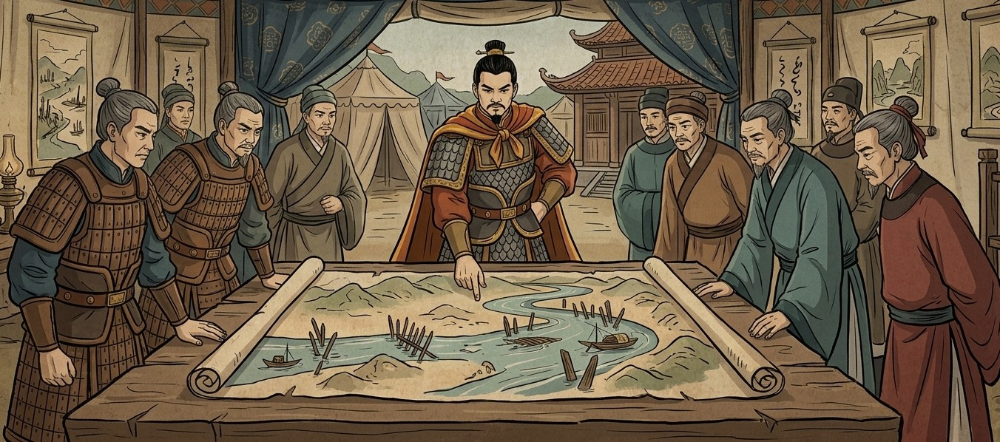
Ngô Quyền họp bàn với bên tham mưu, ngài bảo thằng nhãi Hoàng Tháo này mới lớn, tính tình trẻ trâu, lại cậy có thuyền to quân đông nên chắc chắn sẽ chủ quan khinh địch, đi xa mỏi mệt nên anh em ta ngồi nhà dưỡng sức lấy quân khỏe đánh quân mệt sẽ chắc thắng. Nhưng đánh như nào cho nhớ đời cho bố ở nhà ko dám hó hé sang đây nữa mới là nghệ thuật. Vậy là dự án thế kỷ bãi cọc sông Bạch Đằng chính thức được khởi công
Người người nhà nhà chung tay ngày đêm làm ra những cây cọc gỗ với đầu nhọn bọc sắt đen. Đem những chiếc cọc gỗ đó cắm sâu xuống lòng sông ngay chỗ hiểm yếu nhất gần cửa biển, để khi thủy triều lên mặt sông che đi những đầu cọc, nhưng khi thủy triều rút mới lộ ra "quà" cho quân Nam Hán
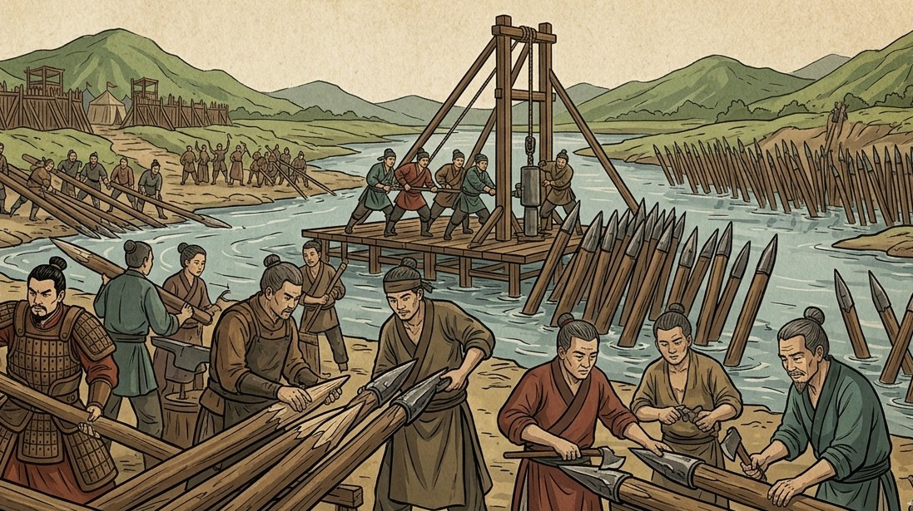
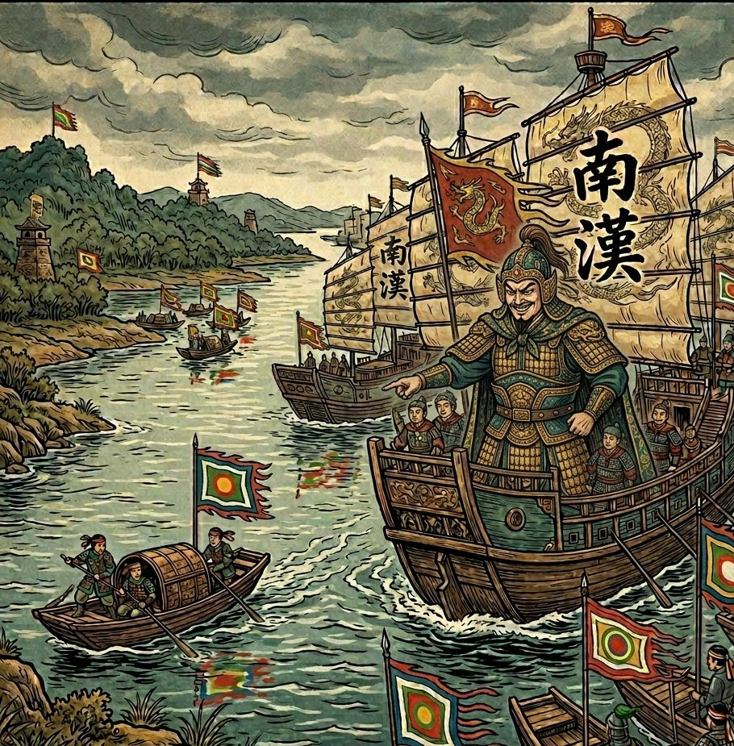
Trận Bạch Đằng năm 938
Cuối 938, gió mùa Đông Bắc lạnh thấm da thịt. Hạm đội Lưu Hoàng Tháo nghênh ngang tiến vào cửa sông Bạch Đằng. Từ xa, Ngô Quyền thấy mồi đã vào tầm ngắm liền tung chiêu thức mang tên "giả vờ thua", ngài cử vài đội thuyền nhẹ ra khiêu chiến, lính của Ngô Quyền vừa đánh vừa chửi bới dăm ba câu, đánh được vài phát cho có rồi đồng loạt quay đầu bỏ chạy chỗ chết. Hoằng Tháo cười ha hả đắc ý, đấy thấy chưa, chưa đánh đã chạy, Giao Châu toàn lũ nhát gan.
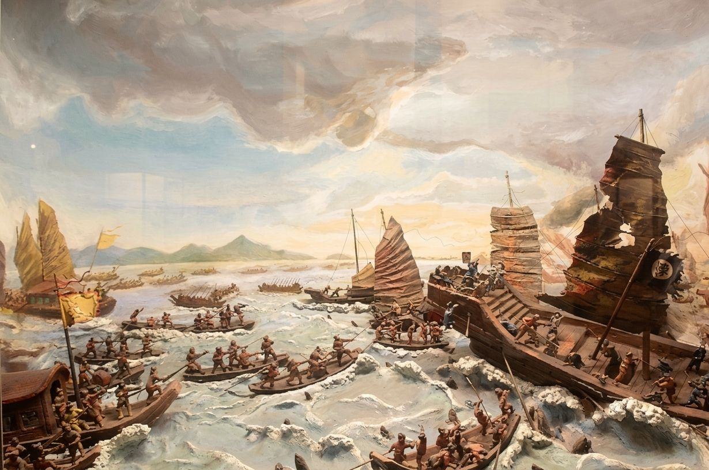
Hạm đội Hoàng Tháo cứ băng băng vượt qua cửa tử mà không hề hay biết, cho đến khi quân Nam Hán lọt thỏm vào sâu trong sông Bạch Đằng, cũng là lúc mặt trời dần buông xuống, quà của tự nhiên bắt đầu lộ ra, thủy triều nước rút nhanh như cách người yêu cũ trở mặt. Thế là xong dính bẫy rồi, một cảnh tượng kinh hoàng hiện ra trước mắt Nam Hán
Ngô Quyền dẫn đại quân xông ra nhưng mãnh hổ vồ mồi. Quân ta từ trên bờ xả mưa tên xuống, những chiến thuyền nhỏ len lỏi vào bãi cọc để đánh giáp lá cà. Đội hình Nam Hán rối loạn, trên thuyền thì bị xả tên, xuống sông thì bị cọc đâm.
Lưu Hoàng Tháo, vị thái tử trẻ trâu lúc sáng còn mơ mộng làm bá chủ giờ luống cuống tìm đường thoát thân nhưng đã quá muộn, vị thái tử kiêu ngạo ấy được nhận 1 vé đăng xuất miễn phí, chìm nghỉm dưới dòng sông Bạch Đằng lịch sử
Chỉ trong vòng 1 ngày ngắn ngủi, toàn bộ đạo quân Nam Hán hùng hậu bị tiêu diệt sạch. Tin con trai chết, Lưu Cung biết mình không đủ sức đánh lại Ngô Quyền, đành rút quân không dám bén mảng sang lần nào nữa.
Chiến thắng Bạch Đăng năm 938 là một tiếng sấm rền xé toạc màn đêm u tối, kết thúc 1000 năm Bắc thuộc. Mở ra thời kỳ độc lập lâu dài của dân tộc.
DẤU ẤN ĐỂ LẠI

Tên tuổi và công lao được các thế hệ sau ghi nhớ, tôn vinh. Hình tượng Ngô Quyền trở thành biểu tượng của lòng yêu nước, ý chí độc lập và tinh thần tự cường dân tộc

Nhiều đền thờ, lăng mộ và di tích lịch sử được xây dựng để thờ phụng, tưởng nhớ công lao của ông, tiêu biểu như Lăng Ngô Quyền và Đền thờ Ngô Quyền
Ngô Quyền không chỉ thuộc về quá khứ, ông là ngọn lửa đang cháy trong hiện tại, nhắc mỗi chúng ta sống mạnh mẽ hơn, kiên cường hơn và dũng cảm viết lên chiến thắng của chính đời mình.
Đinh Bộ Lĩnh
924-979
GIỚI THIỆU
Khi nhắc đến Đinh Bộ Lĩnh chúng ta thường nghĩ tới Đinh Bộ Lĩnh dẹp loạn 12 sứ quân, nghe rất ngầu phải không? Nhưng ít ai biết được trước khi tên tuổi vang dội ấy thì ông có cuộc đời như thế nào. Hãy tiếp tục cùng chúng tôi tìm câu trả lời nhé
Nối tiếp câu chuyện lịch sử về Ngô Quyền, năm 944 - Đức Ngô Quyền, vị tổ trung hưng đã đánh tan quân Nam Hán trên sông Bạch Đằng đột ngột băng hà. Ngài ra đi để lại một khoảng trống mênh mông không ai đủ sức lấp đầy. Triều đình rối ren, lòng người ly tán, nhiều thế lực hào trưởng địa phương lực bị kìm hãm bấy lâu được dịp vùng lên sâu xé. Giang sơn gấm voc bỗng chốc vỡ vụn thành 12 mảnh ghép rời rạc.

Trong Bối cảnh hỗn mang ấy, tại Động Hoa Lư (Ninh Bình) - một vùng đất địa linh nhân kiệt. Cậu bé Đinh Bộ Lĩnh đã lớn lên. Cha là Đinh Công Trứ - một vị tướng tài ba dưới trướng Ngô Quyền nên dòng máu chảy trong Đinh Bộ Lĩnh là dòng máu nhà tướng đầy dũng mãnh và can trường. Nhưng cha mất sớm, ông theo mẹ về nương nhờ chú ruột sống cuộc đời dân dã, chăn trâu cắt cỏ cùng lũ trẻ trong vùng.
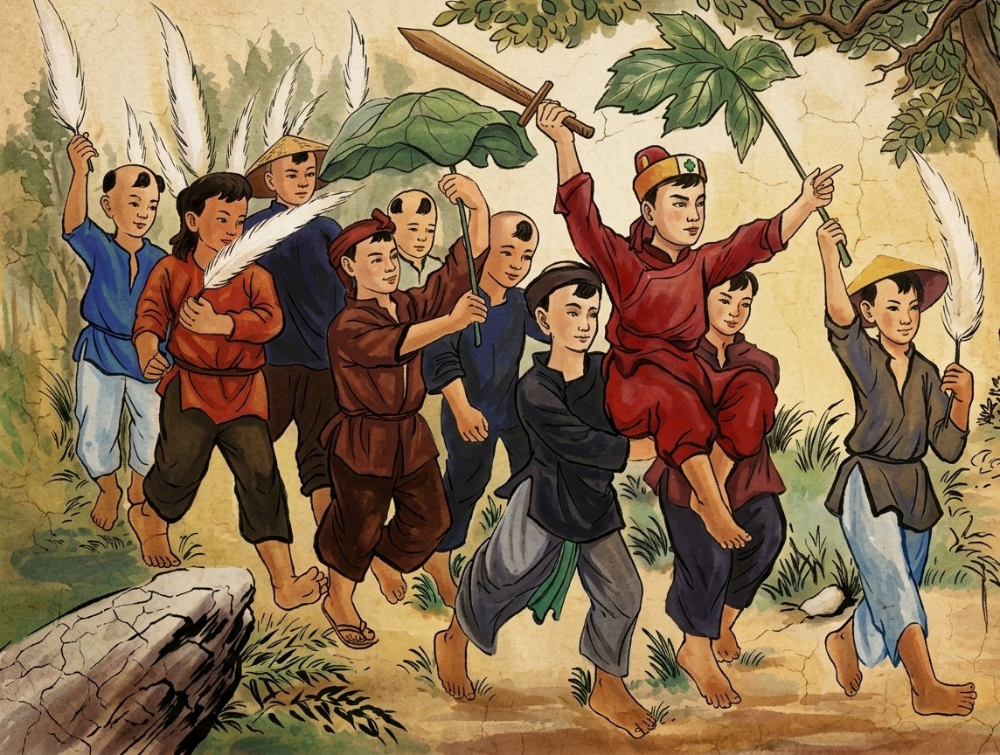
CHIẾN CÔNG
Khi trưởng thành, Đinh Bộ Lĩnh không cam chịu cảnh sống ẩn dật. Ông nhìn ra thế cuộc và hiểu rằng thời cờ đã đến. Không còn là trận đánh giả với cờ lau. Ông bắt đầu tập hợp lực lượng rèn đúc vũ khí thật sự. Những người bạn thuở thiếu thời như Đinh Điền, Nguyễn Bặc, Lưu Cơ, Trĩnh Tú trở thành những cánh tay đắc lực, những vị tướng tiên phong cùng ông xây dựng cơ đồ.
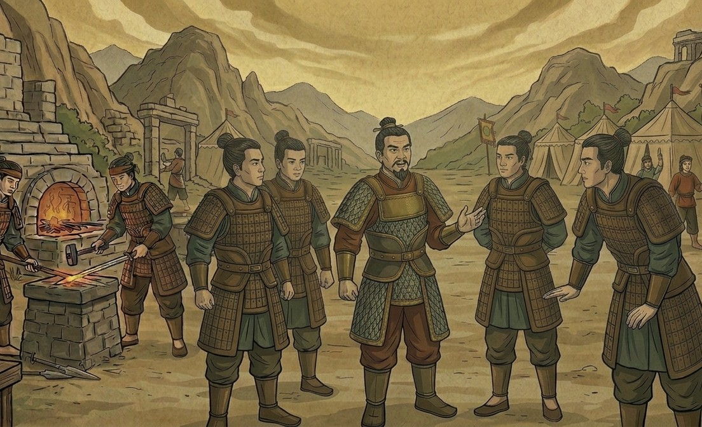
Tiếng tăm Đinh Bộ Lĩnh bắt đầu vang xa khiến các thế lực xung quanh phải dè chừng.
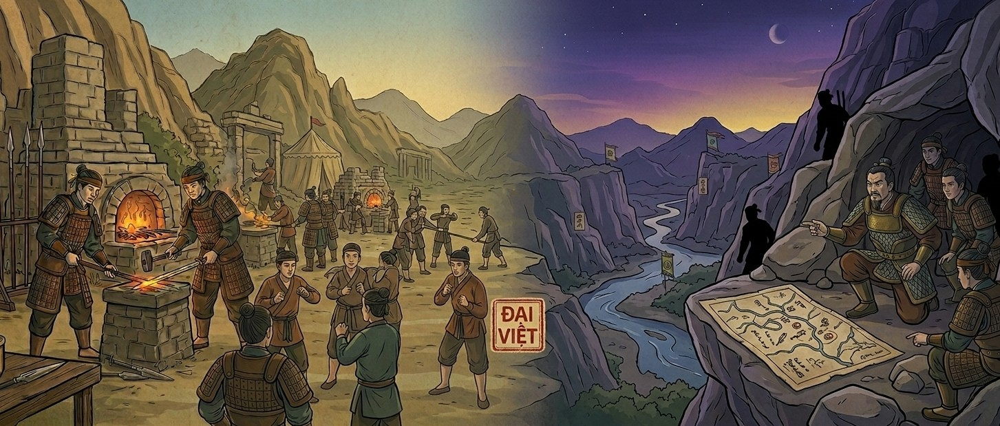
Hoa Lư những ngày tháng chuẩn bị ấy không ngừng vang tiếng rèn sắt đúc gươm, tiếng reo hò tập trận vang cả núi rừng. Đinh Bộ Lĩnh dạy cho quân sĩ cách lợi dụng địa hình để mai phục, dùng ít địch nhiều. Ông hiểu rằng muốn dẹp loạn 12 sứ quân không chỉ dựa vào sức mạnh cơ bắp mà còn phải dùng cái đầu lạnh.
Đinh Bộ Lĩnh quyết định nước cờ táo bạo, một canh bạc sinh tử. Thay vì xua quân tấn công Bố Hải Khẩu (Thái Bình) để tranh giành lãnh thổ ông chọn con đường hòa hiếu. Ông đích thân dẫn con trai trưởng là Đinh Liễn đến gặp Trần Lãm, Đinh Bộ Lĩnh gạt bỏ cái tôi cúi đầu trước Trần Lãm và đưa ra quyết định đau lòng là để Đinh Liễn ở lại làm con tin để làm tin cho lời thề ước.
Đạo quân Hoa Lư như hổ mọc thêm cánh, sự kết hợp giữa đội quân thiện chiến kỉ luật của Đinh Bộ Lĩnh và tiềm lực kinh tế, binh lực dồi dào của Trần Lãm đã tạo nên một thế lực vô địch. Đỉnh điểm khi Trần Lãm qua đời, trước khi nhắm mắt xuôi tay, ông quyết định trao quyền điều binh khiển tướng cho Đinh Bộ Lĩnh.
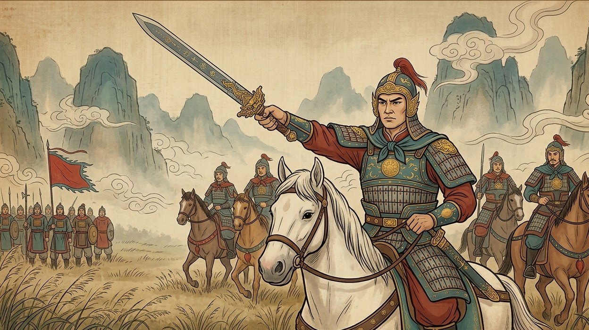
Đinh Bộ Lĩnh tiếp tục đi bẽ gãy từng mắt xích yếu , thu phục lòng người thay vì cầm quân đi chinh chiến, chỉ khi gặp những kẻ cứng đầu mới dùng đến quân. Tiếng tăm Vạn Thắng Vương vang dội như sấm nổ bên tai, trở thành nỗi ám ảnh kinh hoàng cho những kẻ còn ôm mộng cát cứ. Ông biết lúc nào cần tuốt gươm, lúc nào cần tra gươm vào vỏ. Ông biến thù thành bạn, biến chướng ngại vật thành bàn đạp.
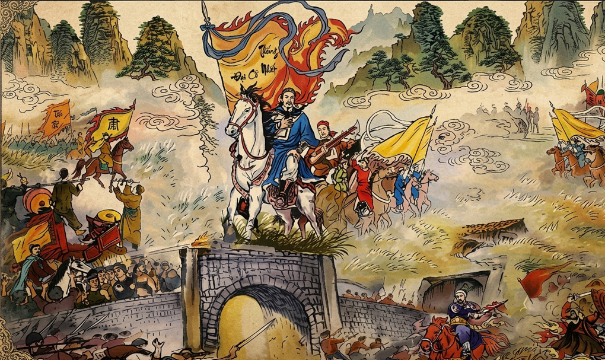
Cục diện 12 sứ quân chẳng khác gì ngọn đèn le lói trước con bão Đinh Bộ Lĩnh, chỉ chờ thời khắc vụt tắt nhường chỗ cho ánh hào quang rực rỡ của một vương triều mới đang lên. Những sứ quân cuối cùng lần lượt buông vũ khí quy hàng. Non sông gấm vóc bao năm chia cắt nay đã nối liền lại thành một dải.
DẤU ẤN ĐỂ LẠI
Được nhân dân tôn kính và thờ phụng tại nhiều di tích lịch sử, tiêu biểu như Đền Vua Đinh

Hình tượng “cờ lau tập trận” trở thành biểu tượng về ý chí và khát vọng lớn lao từ tuổi trẻ

Đinh Bộ Lĩnh không chỉ là một ông vua, ông là kẻ mở đường, là đứa trẻ cầm cỏ lau. Mà cả nghìn năm sau, lịch sử vẫn phải cúi đầu
Trần Hưng Đạo
1226 - 1300
Giới thiệu
Bạn có biết đời nhà Trần có một vị Thánh và một vị Phật không? Đó chính là Đức Thánh Trần Hưng Đạo và Phật Hoàng Trần Nhân Tông. Nhưng chúng ta sẽ cùng tìm hiểu riêng vị Đức Thánh Trần - người đã lãnh đạo nhân dân 3 lần kháng chiến chống Nguyên Mông.
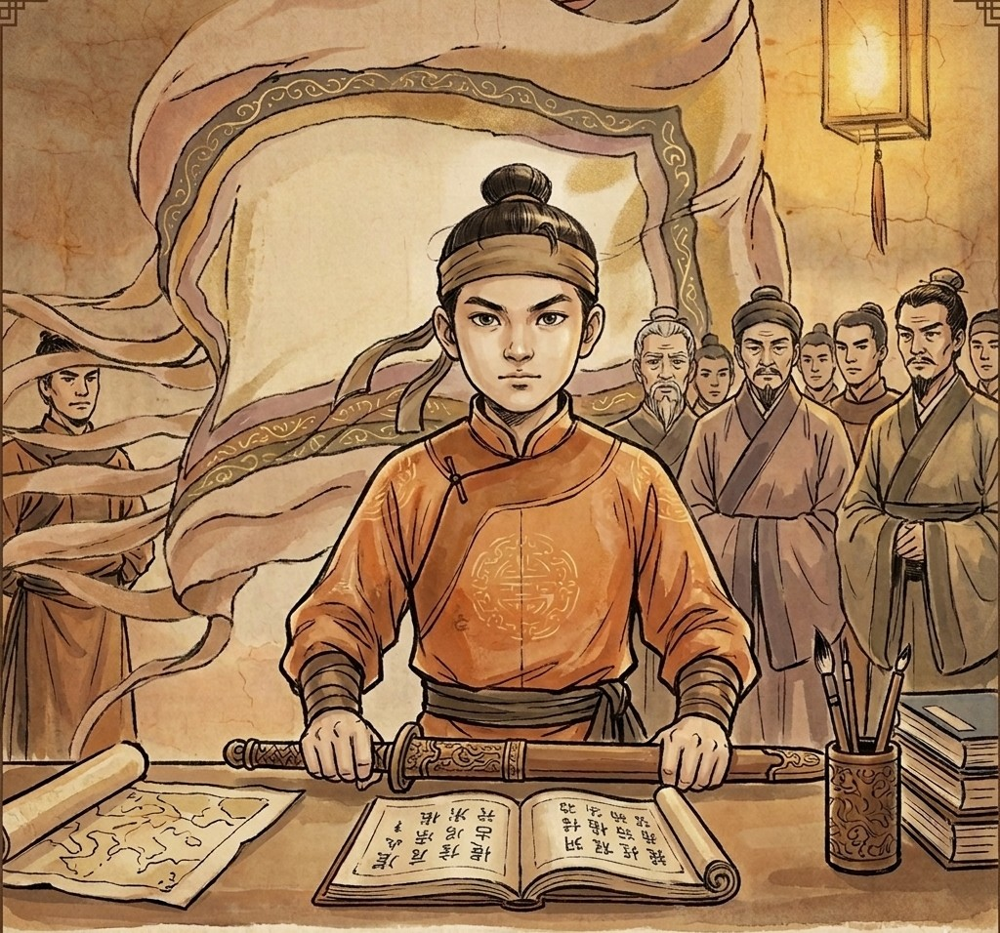
Sinh ra trong hoàng tộc nhà Trần. Ngay từ nhỏ, ông nổi tiếng thông minh học rộng, am hiểu binh pháp và có trí hơn người.
Cha ông từng mang nỗi uất hận vì biến cố trong dòng tộc. Giữa thù riêng và đại nghĩa, ông quyết định Gác thù nhà để giữ yên xã tắc.
Ông hiểu rằng vận mệnh dân tộc luôn lớn hơn mọi ngai vàng
CHIẾN CÔNG
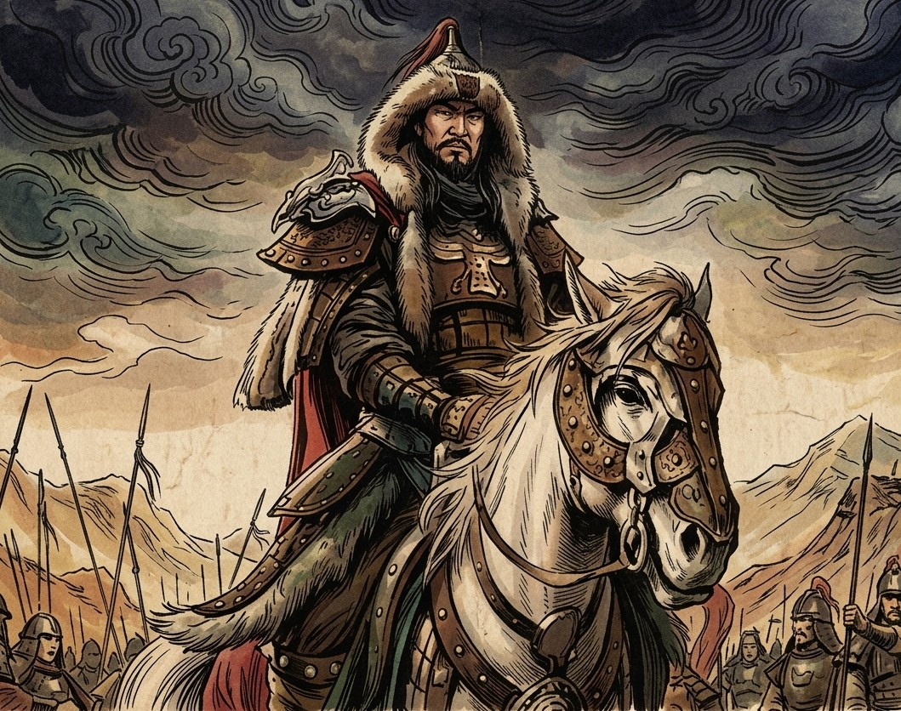
Giới thiệu qua một chút về kẻ thù chúng ta sắp đối mặt, một kẻ không phải dạng vừa đâu. Một cơn bão mang tên Quân Nguyên Mông, lực lượng quân sự của đế quốc Mông Cổ và nhà Nguyên. Kỵ binh Mông Cổ đi đến đâu cỏ không mọc được tới đó. Nếu kỵ binh Châu Âu thời đó giống mấy chiếc xe tăng hạng nặng chạy chậm và tốn xăng thì kỵ binh Mông Cổ chính là mấy con xe đua công thức một đời mới nhất.
Mỗi lính Mông Cổ khi ra trận thường dắt theo từ 3-4 con ngựa. Vâng, bạn không nghe nhầm đâu, một người cưỡi 4 con ngựa. Đang chạy con này mà thấy nó mệt, họ nhảy sang con khác cưỡi tiếp ngay trên đường chạy, không cần dừng lại đổ xăng hay thay nhớt. Nhờ kỹ năng đổi xe thượng thừa này, quân Mông Cổ có tốc độ hành quân nhanh đến mức người ta đồn là họ có thể xuất hiện ngay sau lưng địch trước cả khi tin tình báo kịp bay về. Tốc độ của họ tính bằng trăm km mỗi ngày.
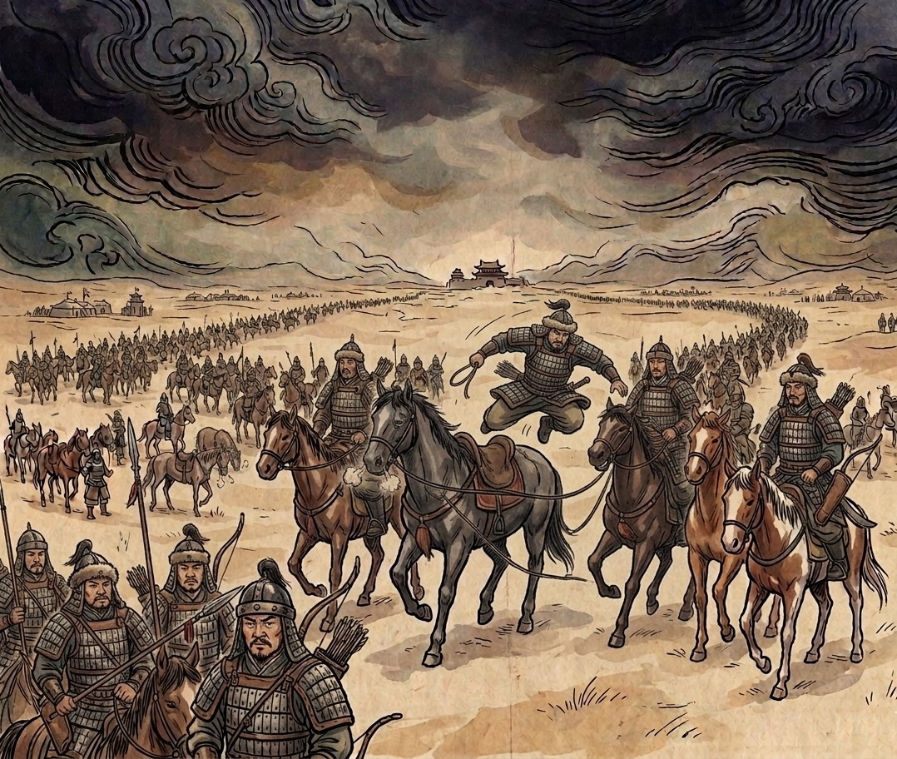
Chưa hết, kỹ năng chiến đấu của họ cũng thuộc hàng bá đạo, cung tên Mông Cổ có tầm bắn xa và sát thương mạnh hơn hẳn các loại cung ở Châu Âu hay Trung Hoa bấy giờ. Họ có thể vừa phi ngựa nước đại vừa xoay người bắn ngược về phía sau với độ chính xác tuyệt đối. Cái này giống như bạn lái xe máy tốc độ 80km/h, thả 2 tay rồi quay lại bắn headshot thằng đuổi theo bằng súng lục vậy.
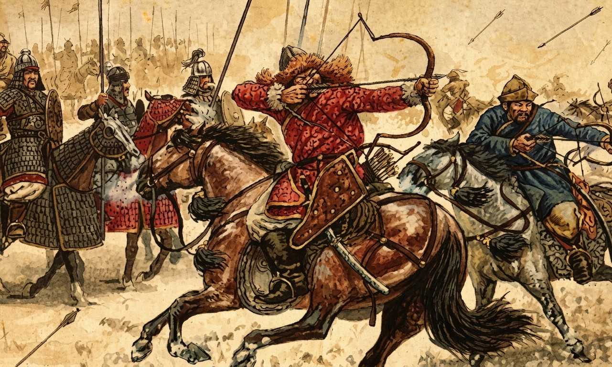
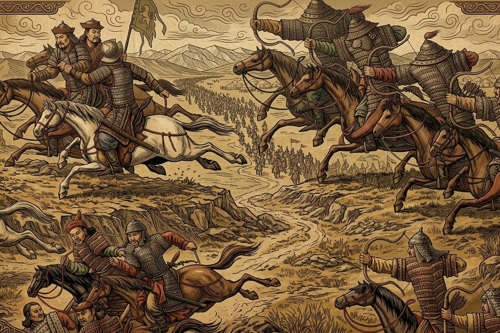
Vậy thành tích của cái đội hack map này là gì? Họ đã san phẳng các vương quốc Hồi giáo ở Trung Á, biến cả vùng Lưỡng Hà trù phú thành bình địa. Họ tràn sang Châu Âu, đánh tan nát liên quân Nga, Kev khiến các hiệp sĩ Châu Âu mặc giáp sắt nặng nề trở thành những chú hề vụng về trên chiến trường. Phía Đông, họ nuốt chửng cả Nam Tống - triều đại Trung Hoa giàu có và văn minh bậc nhất thế giới bấy giờ. Nói tóm lại cái tên Nguyên Mông vào thế kỷ 13 giống như cơn đại dịch, một cái chết đen mà ai nghe cũng phải rén.
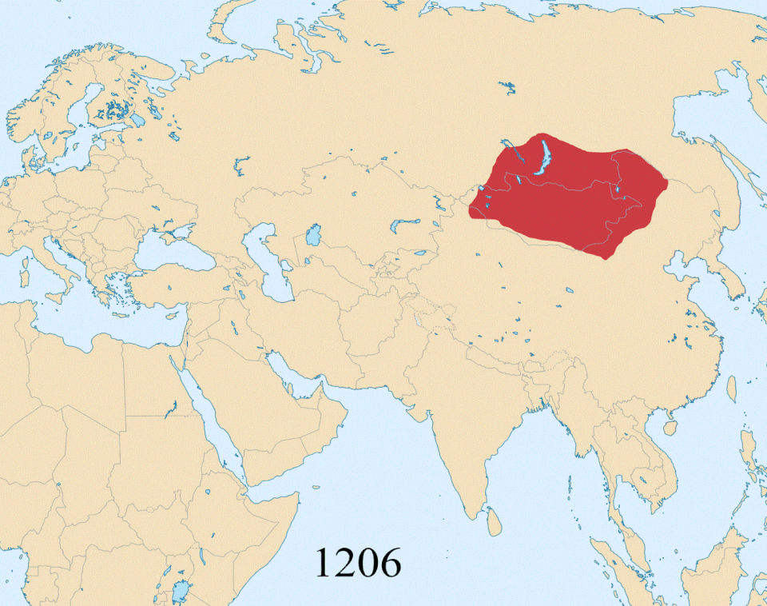
Tư duy của người Mông Cổ rất đơn giản, hàng thì sống còn chống thì chết. Và cái chết họ mang đến thường hủy diệt toàn bộ. Họ áp dụng triệt để chiêu khủng bố tinh thần, tàn sát dã man. Giáo án này hiệu quả đến mức nhiều nơi mở cửa thành đầu hàng ngay khi thấy bụi cuốn mù mịt từ xa. Thế nên khi quân Mông Cổ quay cái nhìn sang Đại Việt, trong mắt họ chúng ta chỉ là một cái chấm nhỏ xíu.
Đại Việt biết mình yếu hơn về sức mạnh, nên ta không dại gì chơi theo luật của chúng. Trần Hưng Đạo đã sớm nhận ra, muốn thắng thằng khổng lồ này không thể dùng sức trâu mà dùng não.

Trận Đông Bộ Đầu (Lần 1 - 1258)
Năm 1258, quân Mông Cổ lần đầu tràn vào Đại Việt với sức mạnh từng khiến nhiều quốc gia khiếp sợ. Trước thế giặc mạnh, quân dân nhà Trần chủ động rút lui để bảo toàn lực lượng rồi bất ngờ phản công tại Đông Bộ Đầu. Chỉ sau chưa đầy một tháng, quân xâm lược bị đánh bật khỏi bờ cõi Đại Việt
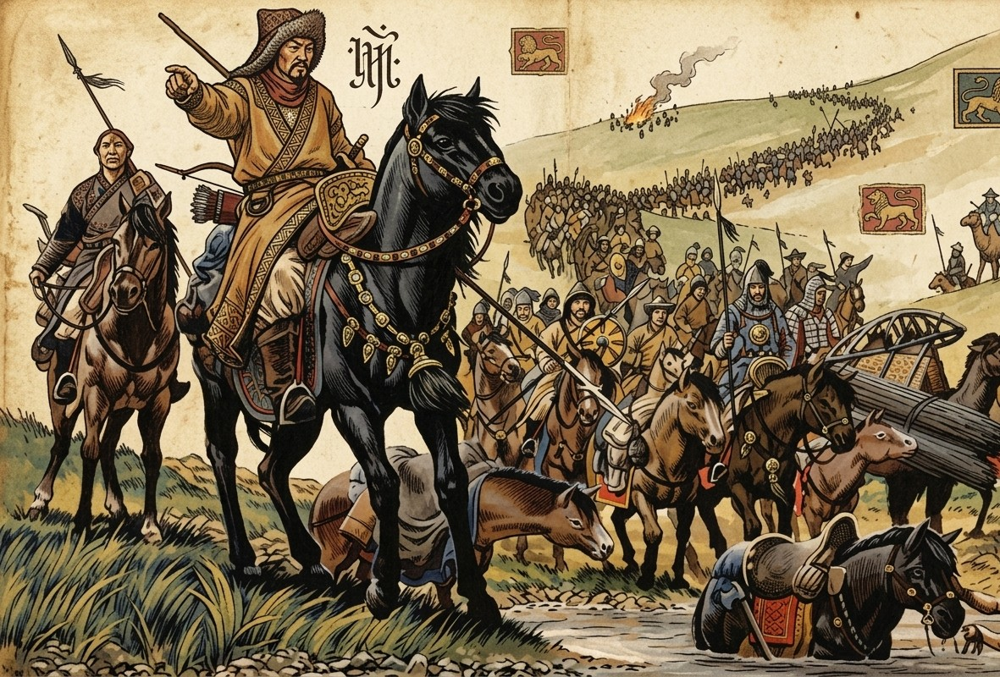
Trận Hàm Tử (Lần 2 - 1285)
Năm 1282, khi tin tình báo bay về báo rằng Quân Nguyên Mông đang dục dịch sang hỏi thăm sức khỏe lần 2, vua Trần liền mở ngay cuộc họp thượng đỉnh tại bến Bình Than (Hải Dương). Nơi đây quy tụ tất cả cá mập, vương hầu, tướng lĩnh cốt cán trong dòng tộc. Nội dung cuộc họp là để bàn xem ai sẽ lo hậu cần, ai lo tiên phong. Tại đây, Trần Hưng Đạo chính thức được trao quyền tổng chỉ huy quân đội hay nói cách khác là nhận trức đội trưởng đội gánh team
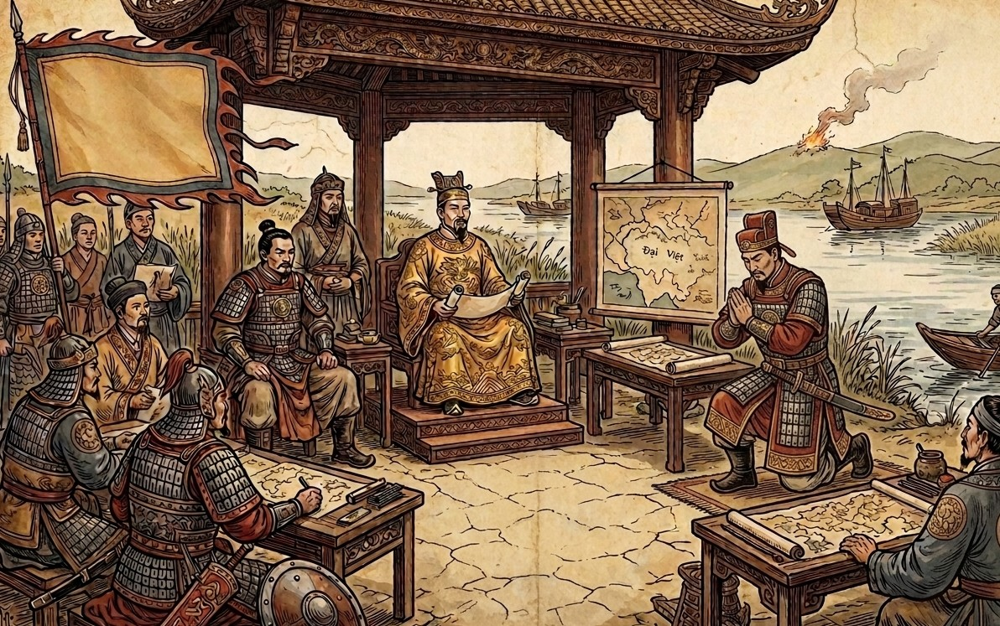
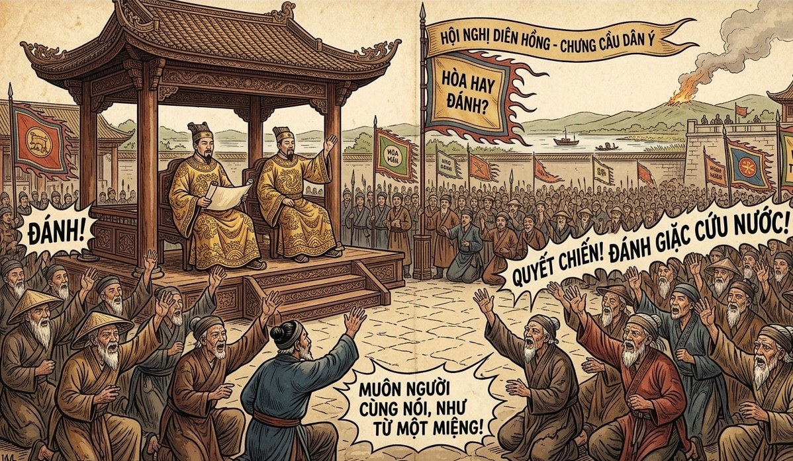
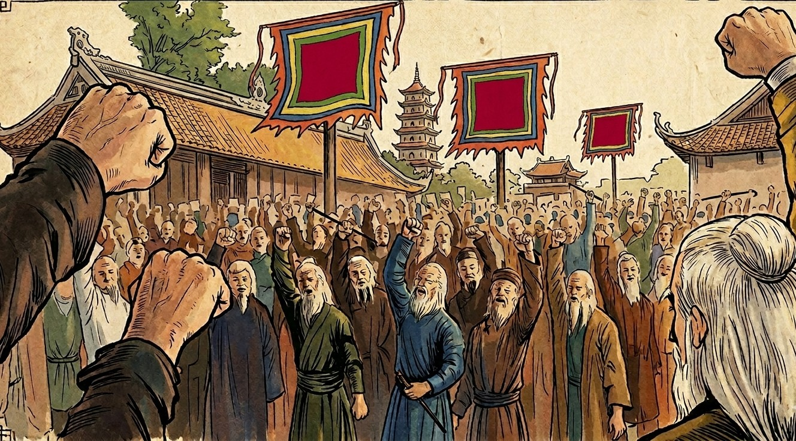
Đỉnh cao nghệ thuật chính trị phải kể đến hội nghị Diên Hồng diễn ra hai năm sau đó vào năm 1284. Đây có thể coi là cuộc trưng cầu dân ý đầu tiên trong lịch sử Việt Nam. Vị vua trẻ tuổi Trần Nhân Tông đã mời các bô lão có tiếng nhất trong dân chúng về Thăng Long để hỏi ý kiến. Các bạn thử tưởng tượng những người già chỉ thích đánh cờ, vui thú điền viên, sợ nhất là tiếng ồn, đánh nhau và biến động. Thế mà khi vua hỏi "Thế giặc mạnh thế này nên hàng hay nên đánh?" Cả hội trường Diên Hồng đồng thanh hô to "Đánhh!". Cái tiếng hô nó nổi kinh khủng, lan truyền từ kinh thành về thôn xóm.
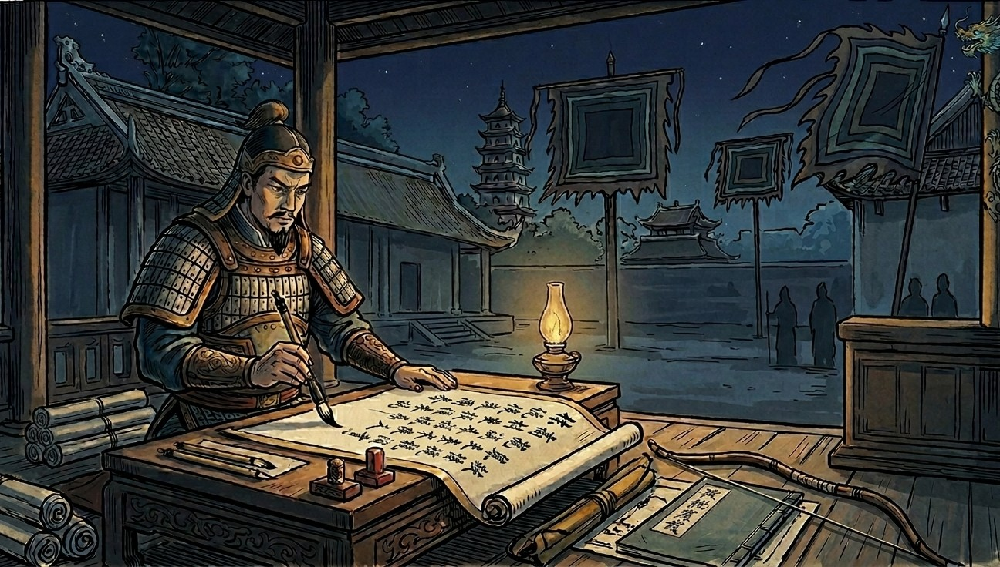
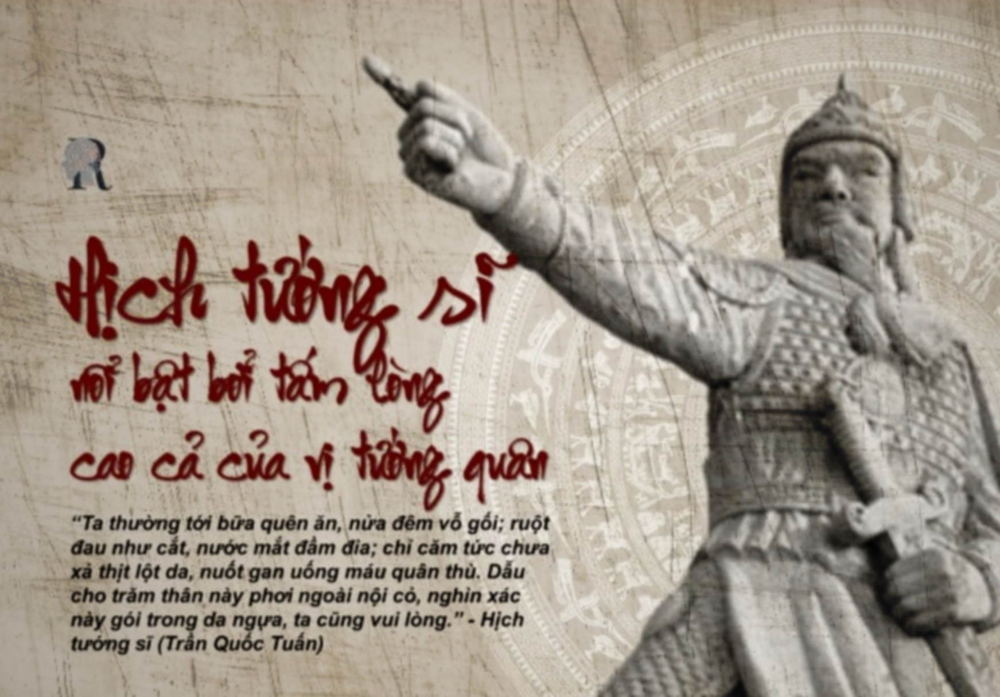
Và đây cũng là lúc tác phẩm truyền đời mang tên "Hịch tướng sĩ" được Trần Hưng Đạo viết. Nếu các bạn nghĩ Hịch tướng sĩ là một bài văn cổ chán ngắt, bắt buộc phải học trong sách giáo khoa thì các bạn lầm to. Nếu hiểu theo ngôn ngữ Gen Z bây giờ thì nó chính là một bài rap chửi cực gắt kết hợp nghệ thuật thao túng đỉnh cao mà ông dành tặng cấp dưới của mình. Bối cảnh khi đó có một số tướng lĩnh nhà Trần bắt đầu chủ quan lơ là, nước đến chân mới nhảy, suốt ngày chỉ lo ăn chơi tận hưởng nốt cuộc đời chờ chết sợ quân Nguyên. Bài Hịch này sinh ra để chỉnh đốn lại đội ngũ.
Trần Hưng Đạo hiểu rằng muốn đánh bại bọn nhà giàu Mông Cổ được trang bị hàng tận răng thì phải chơi bài du kích, chơi bài nhà nghèo vượt khó. Ông cho xây căn cứ Vạn Kiếp trở thành doanh trại kiên cố, một kho lương và vũ khí. Quan trọng hơn, ông chuẩn bị cho một chiến thuật sau này trở thành thương hiệu của Việt Nam - Vườn khồng nhà trống.
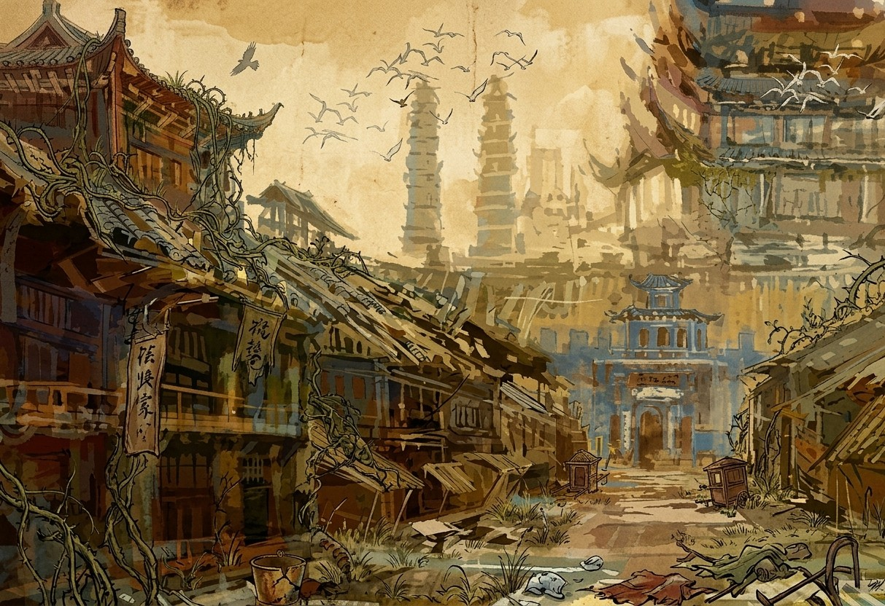
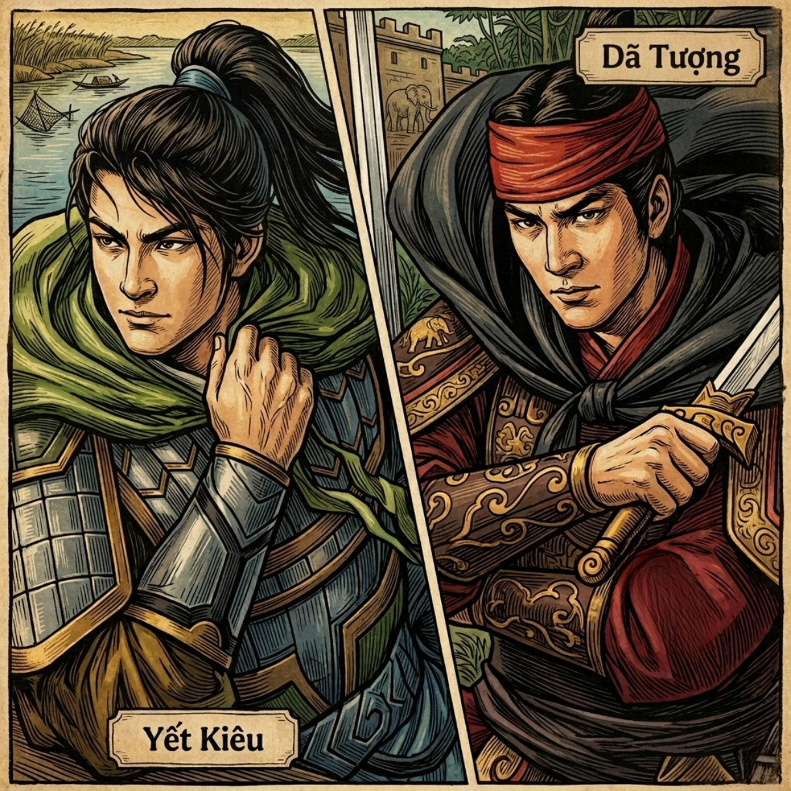
Trong khâu tuyển dụng nhân sự, ông còn có những nước đi rất thoáng. Ông không quan trọng bằng cấp hay xuất thân, miễn là có tài và trung thành. Nhờ thế mà ông chiêu mộ được những dị nhân như Yết Kiêu, Dã Tượng. Những người vốn chỉ là gia nô, xuất thân thấp kém, nhưng có siêu năng lực đặc biệt. Yết Kiêu thì bơi lặn như rái cá, đục thuyền địch như cơm bữa. Dã Tượng thì nổi tiếng với tài thuần phục voi rừng.
Đến hẹn phải lên. Năm 1285, bóng ma chiến tranh chính thức quay lại hỏi thăm lần 2, và lần này mang quà đặc biệt gấp 10 lần, bất ngờ gấp trăm lần. Hãy nhìn vào đội hình ra sân của đội khách , dẫn đầu là thoát Hoan - con trai cưng của Hốt Tất Liệt, theo sau là đôi hình 50 vạn quân (nửa triệu người). Con số này đông đến mức người ta đồn rằng Quân Nguyên đi ướng nước ở sông thì mực nước sông cũng phải tụt đi một nửa. Chưa hết, Hốt Tất Liệt còn tinh tế chuẩn bị thêm quà quê từ phía nam điều thêm tướng Toa Đô đánh thốc lên trở thành thế gọng kìm.
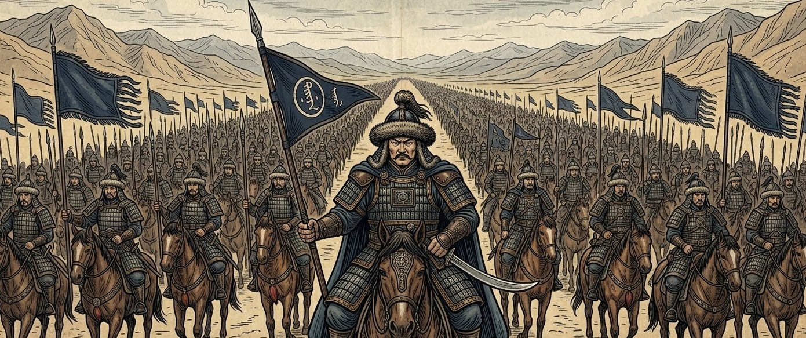
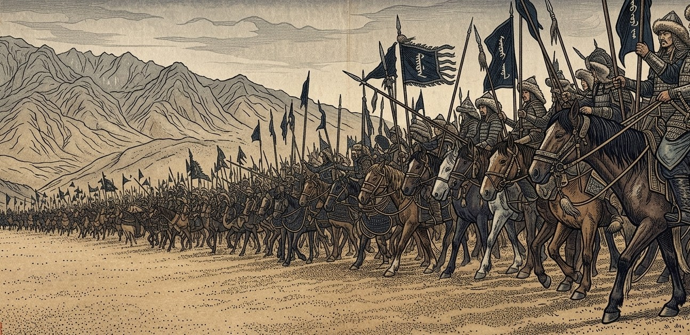
Giai đoạn đầu cuộc chiến nổ ra, đúng như dự đoán, Đại Việt bị ép phải cần bình oxy, bị áp đảo tuyệt đối, quân ta phải vừa đánh vừa lùi. Lúc này áp lực khủng khiếp đến mức nội bộ nhà Trần bắt đầu dao động. Vua Trần Thánh Tông nhìn cảnh đất nước bị giày xéo, lòng đau như cắt. Trong buổi họp khẩn, nhà vua ướm hỏi Trần Hưng Đạo: "Thế giặc mạnh thế này hay là ta hàng cho dân đỡ khổ?" Và đây là khoảnh khắc mà Trần Hưng Đạo bật chế độ ngầu lòi nhất. Ông không nao núng, nhìn vua và buông một câu xanh rờn: "Bệ hạ chém đầu thần rồi hãy hàng".
Từ sau liều thuốc tinh thần ấy, đội quân Đại Việt như vực dậy. Trần Hưng Đạo vẽ lại chiến thuật, ông chia nhỏ quân đội thực hiện nghi binh. Hôm nay Quân Nguyên thấy cờ Trần Hưng Đạo ở đây, mai lại thấy ở kia, không biết đâu mà lần.
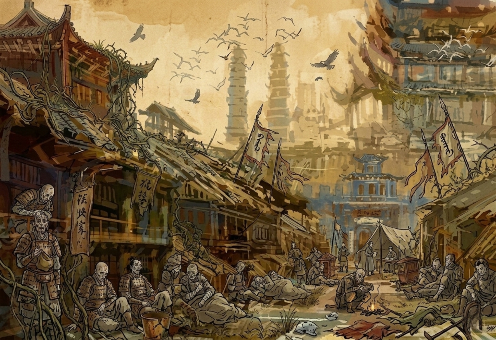
Lần này kế hoạch vườn không nhà trống phát huy tác dụng rõ rệt. Các bạn biết mùa hè miền Bắc Việt Nam nó nóng kinh khủng thế nào rồi đấy. Nóng ẩm oi bức đến người bản địa còn muốn xỉu, huống chi mấy anh Mông Cổ quen sống xứ lạnh thảo nguyên. Cái nóng thiêu đốt công thêm mưa rào nhiệt đới biến quân Nguyên thành những con rù. Dịch bệnh thì bùng phát, lương thực thì can kiệt, tinh thần quân địch tụt dốc không phanh.
Từ tháng 5 năm 1285, thế cờ xoay chiều. Nhân thấy quân địch mệt mỏi, Trần Hưng Đạo phất cờ tổng tiến công đánh cho tan đàn xẻ nghé quân Nguyên. Cánh quân phía Nam của Toa Đô bị cô lập hoàn toàn, hắn tìm cách liên lạc với Thoát Hoan nhưng bị quân ta bao vây tứ phía ở trận Tây Kết. Trong cơn tuyệt vọng hắn đã chiến đấu và bỏ mạng.
Nghe tin Toa Đô chết, Thoát Hoan ở phía Bắc sợ xanh mặt, lúc này mục tiêu duy nhất là về nhà với mẹ, nhưng đường về bị các anh lớn quân ta chặn hết rồi. Cung tên bắn như mưa, trong cơn hoảng loạn, Thoát Hoan đã thực hiện một pha hack não vô cùng ảo diệu đó là chui tọt vào ống đồng bảo lính khiêng về bảo toàn tính mạng. Thái tử cũng chỉ thế này thôi.
Đại Việt đã chứng mình rằng dù bạn có quân đông đến đâu mà vào sân nhà chúng tôi không xin phép thì bị đuổi đừng kêu.
Trận Bạch Đằng (Lần 3 - 1288)

Quá tam ba bận, Hốt Tất Liệt sau lần 2 thua đau đớn, cay cú quá lần này quyết chơi tất tay ván cuối vào năm 1288
Lần này rút kinh nghiệm sâu sắc, mang theo cả thủy quân do Ô Mã Nhi - một tay tướng khát máu hung hãn cầm đầu. Về phía bộ binh là gương mặt thân quen ống đồng Thoát Hoan, hắn quay lại để xóa mác ống đồng rửa hận. Hắn mang cả một đội quân đông đảo quyết tâm san bằng Thăng Long lấy lại liêm sỉ.
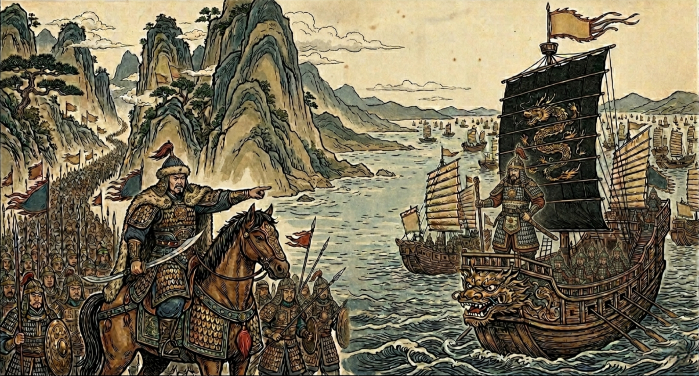
Đầu game, quân Nguyên đã hết lương thực. Bài học xương máu vườn không nhà trống của nhà Trần vẫn còn nguyên giá trị. Bây giờ nguồn sống duy nhất của quân Nguyên trông chờ vào thyền lương của Trương Văn Hổ. Nhưng đen cho đội bạn lại gặp Trần Khánh Dư ở Vân Đồn mới đau, Trần Khánh Dư đã thực hiện một pha cướp tài nguyên mẫu mực, đánh chìm toàn bộ tàu lương địch.
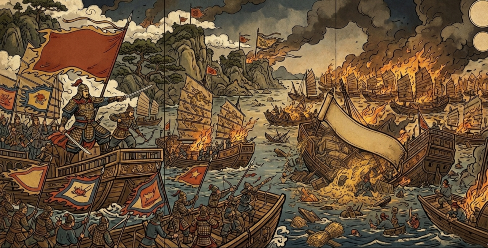
Mất lương thực, quân Nguyên rơi vào tình thế chưa đánh đã thua. Thoát Hoan ở Thăng Long đói meo chờ mãi không thấy ship đồ ăn đến, nhận ra nếu cứ chơi ở đây sẽ chết đói trước khi chết trận. Ngay lập tức cay đắng ra lệnh rút quân về nước.
Với kinh nghiệm đọc map của mình, Trần Hưng Đạo đọc vị được đường đi nước bước của địch như sách giáo khoa, biết chúng sẽ rút qua đường thủy sông Bạch Đằng. Đây chính là lúc ta đóng cửa thả chó, một đi không trở lại. Lần này cụ Trần quyết định diệt tận gốc, ông chọn cửa sông Bạch Đằng, nơi con sông huyền thoại năm xưa Ngô Quyền dạy quân Nam Hán một bài học về kỹ thuật đóng cọc. Trần Hưng Đạo quyết tái hiện lại lịch sử năm ấy nhưng lần này vip pro hơn.
Hạm đội Ô Mã Nhi hùng hổ tiến vào sông Bạch Đằng. Khi đó là sáng sớm, thủy triều dâng cao che lấp bãi cọc, Trần Hưng Đạo cho một vài đội thuyền nhẹ ra khiêu khích đối phương. Ô Mã Nhi thấy thuyền bé tí dám trêu mình thì nổi máu điên ra lệnh toàn hạn đội đuổi theo. Dụ địch sâu vào bãi cọc, hắn cứ ngỡ mình thế thượng phong hoàn toàn không để ý mực nước cạn dần. Và rồi thời khác đã định, thủy triều rút như tụt huyết áp. Tiếng gỗ đâm răng rắc vào thuyền. Hạm đội toán loạn, ùn tắc giao thông kéo dài. Đúng lúc đó hàng ngàn mũi tên tẩm độc của quân Đại Việt giáng xuống, địch chết như ngả rạ. Ô Mã Nhi bị bắt sống trong sự ngỡ ngàng như con nai vàng ngơ ngác.
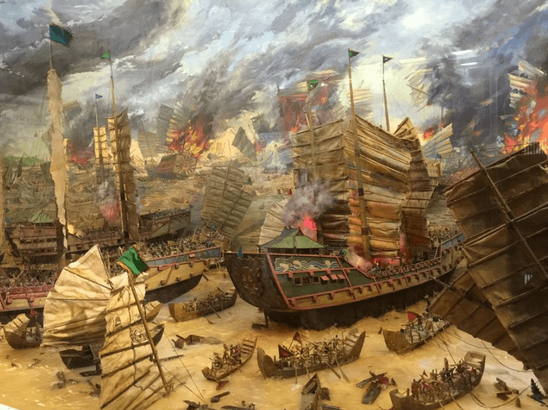
Thoát Hoan nhận được tin thì cuống cuồng trốn về nước, thề chắc lần sau không dám sang đây chơi nữa.
Kết cục, đế chế Nguyên Mông, kẻ chinh phục cả thế giới lại phải nhận lấy thất bại trước một đất nước nhỏ bé không những 1 mà tận 3-0. Sau trận cuối này nhà Nguyên cạch mặt Đại Việt Luôn, không bao giờ dám bén mảng sang lần thứ 4.
DẤU ẤN ĐỂ LẠI

Sau khi qua đời, dân gian Việt Nam suy tôn ông thành Đức Thánh Trần - Cửu Quan Vũ Đế

Hơn bảy thế kỷ đã trôi qua, tên tuổi Trần Hưng Đạo vẫn là biểu tượng của lòng yêu nước, ý chí quật cường và tinh thần bảo vệ non sông
Dù không ngồi trên ngai vàng, ông vẫn sống mãi trong trái tim dân tộc Việt Nam.
Nguyễn Huệ
1753 - 1792
Giới thiệu
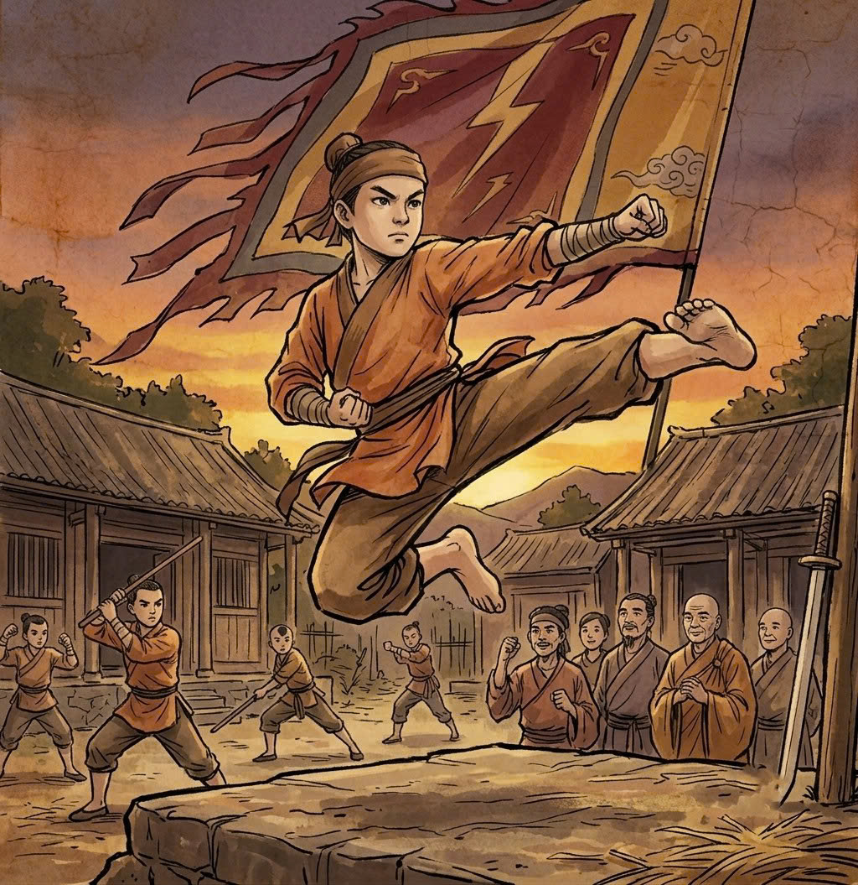
Khi nhắc đến Nguyễn Huệ, người ta nghĩ ngay đến vị Hoàng đế thiên tài, bách chiến cách thắng với những cuộc hành quân thần tốc khủng khiếp Để biết rõ thêm về vị anh hùng áo vải này, chúng ta sẽ tìm hiểu về trận đánh nổi tiếng thần tốc nhất của lịch sử Việt Nam
Xuất thân trong một gia đình bình dân, chủ yếu làm nông và buôn trầu cau. Thời trẻ, ông nổi bật với tư chất thông minh, sức khỏe phi thường và sớm được rèn luyện văn võ, ông sớm có kiến thức quân sự và nuôi dưỡng ý chí lớn
Nhờ tài thao lược thiên bẩm, khi mới 26 tuổi, ông được Nguyễn Nhạc phong làm Long Nhương tướng quân. Ông nổi danh là một vị tướng thiện chiến, hành quân chớp nhoáng, đóng vai trò trụ cột trong việc đánh dẹp và mở rộng lãnh thổ từ rất sớm.
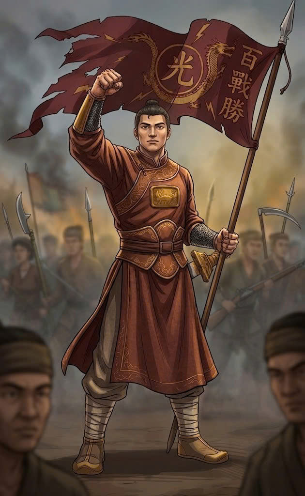
CHIẾN CÔNG
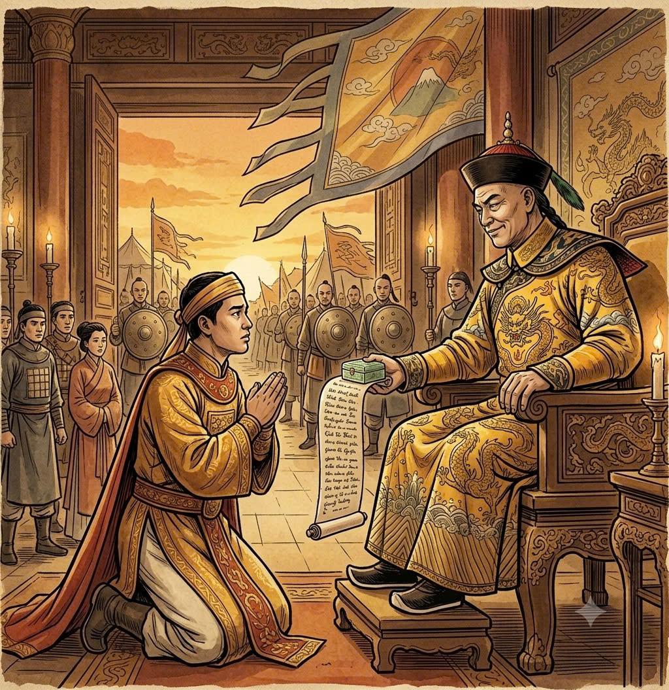
Năm 1788, dưới sự bá đạo của quân Tây Sơn, vua Lê Chiêu Thống chạy sang Trung Quốc và cầu cứu nhà Thanh nhằm đánh đuổi quân Tây Sơn, hồi sinh gia tộc
Nhận được cầu cứu, vua Càn Long coi đây là kho báu để mở rộng ảnh hưởng của mình xuống phương Nam Một đạo quân viễn chinh gồm 29 vạn quân Thanh do Tôn Sĩ Nghị chỉ huy tiến vào Đại Việt với ý muốn thôn tính nước ta
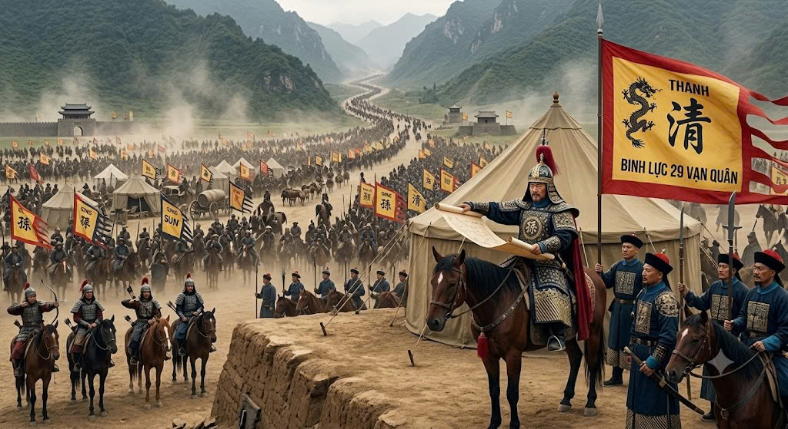
Cuối năm 1788, quân Thanh vượt biên giới, nhanh chóng chiếm được Thăng Long Tôn Nghị Sĩ chủ quan, ngạo mạn cho tuyên bố sẽ ăn Tết tại Thăng Long
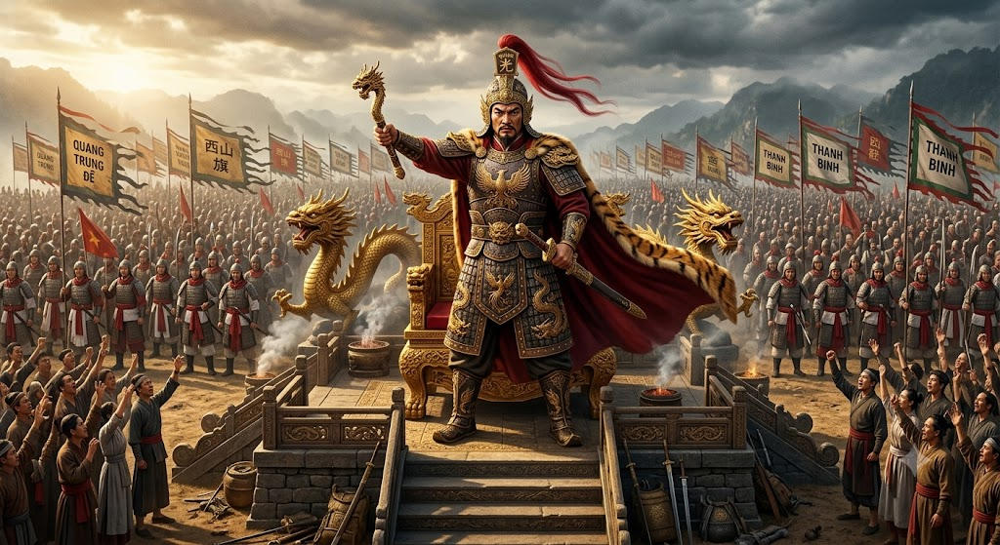
Khi nhận được tin quân Thanh xâm lược. Ngày 22 tháng 12 năm 1788, Nguyễn Huệ lên ngôi Hoàng đế tại Phú Xuân, lấy niên hiệu Quang Trung Chỉ chờ có thế, Quang Trung phát động cuộc Bắc tiến thần tốc, tuyển thêm quân, tổ chức lại lực lượng trực tiếp chỉ huy chiến dịch, chuẩn bị đánh luôn cho nóng
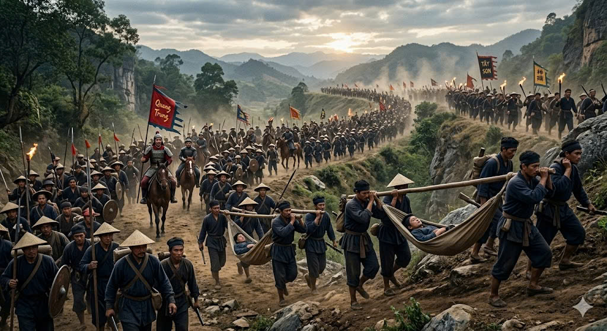
Từ Phú Xuân ra Bắc Hà, ông cho lính vừa đi vừa nghỉ trên võng thay phiên nhau khiêng để quân đội không bao giờ dừng lại. Đó không chỉ là sức lực, đó là sự đỉnh cao của tổ chức và kỳ lực thép. Đánh cho để dài tóc, đánh cho để đen răng, lời hịch của ông là tiếng sấm báo hiệu sự diệt vong cho kẻ thù
Trận Ngọc Hồi (1789)
Tại Ngọc Hồi, quân Thanh xây dựng hệ thống phòng thủ kiên cố với nhiều lớp lũy. Quang Trung đã sáng tạo sử dụng những tấm khiên lớn bọc rơm ướt để chống lại hỏa lực của đối phương. Quân Tây Sơn vừa tiến lên vừa che chắn, phá vỡ tuyến phòng thủ và xông thẳng vào trận địa địch. Trước sức tấn công mãnh liệt, quân Thanh nhanh chóng tan rã.
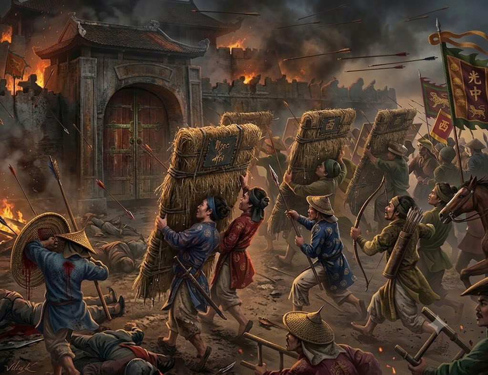
Trận Đống Đa (1789)
Cùng lúc đó, tại Đống Đa, một cánh quân Tây Sơn khác bất ngờ đánh thẳng vào lực lượng chủ lực của quân Thanh. Bị tấn công từ nhiều hướng, quân Thanh rơi vào hỗn loạn. Nhiều tướng lĩnh bị tiêu diệt, trong đó có Sầm Nghi Đống.
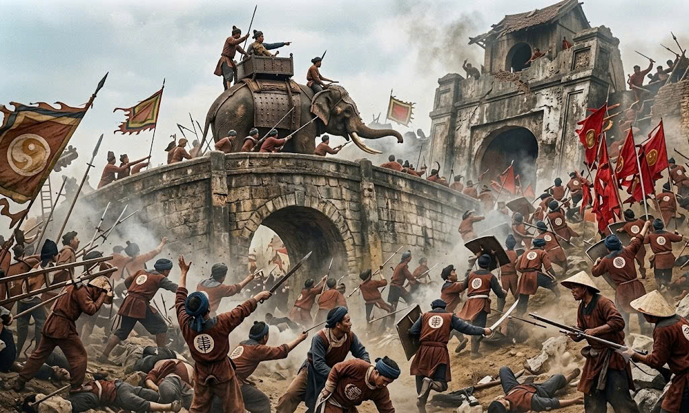
Nghe tin các phòng tuyến bị phá vỡ, Tôn Sĩ Nghị hoảng loạn bỏ chạy qua sông Hồng rồi tháo chạy về Trung Quốc. Quân Thanh tan tác, nhiều binh sĩ bị tiêu diệt hoặc chết trong lúc tháo chạy.
Chỉ trong khoảng năm ngày từ đêm 30 Tết đến mùng 5 Tết, vua Quang Trung đã quét sạch quân Thanh ra khỏi bờ cõi. Đây là một trong những cuộc phản công thần tốc và vẻ vang nhất trong lịch sử quân sự Việt Nam
Chiến thắng Ngọc Hồi - Đống Đa năm 1789 không chỉ bảo vệ nền độc lập dân tộc mà còn khẳng định tài năng quân sự kiệt xuất của vua Quang Trung. Chiến thắng ấy trở thành biểu tượng của ý chí quật cường, tinh thần yêu nước và khát vọng tự chủ của dân tộc Việt Nam.
DẤU ẤN ĐỂ LẠI
Ông ra đi khi tham vọng canh tân đất nước còn dang dở Nhưng ngọn lửa từ áo vải cờ đào vẫn luôn giựt cháy trong tim mỗi người Việt

Ông được nhân dân tôn kính, thờ phụng tại nhiều di tích lịch sử, tiêu biểu như Bảo tàng Quang Trung và Đền thờ Tây Sơn Tam Kiệt

Quang Trung dạy chúng ta rằng "Thời cơ không tự đến thời cơ là do chính chúng ta tạo ra bằng tốc độ và lòng dũng cảm"